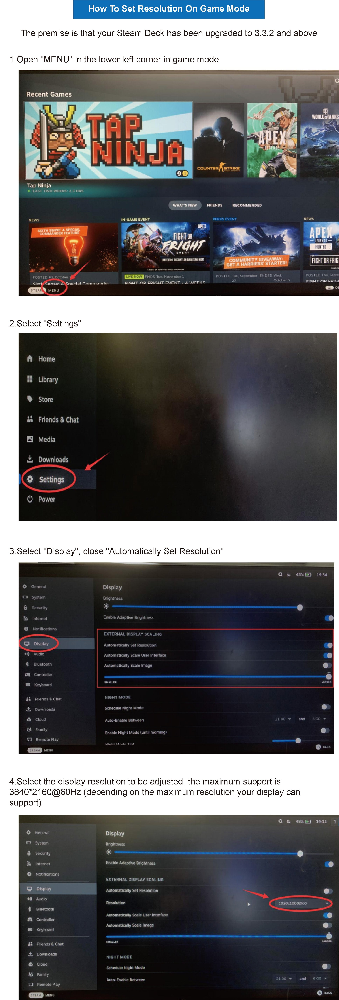

SWECENT: Steam-Deck-Dock-Operation-Guide
Today we'll be answering some frequently asked questions about 4K/60Hz screen compatibility in the swecent docking station for Steam Deck, so please read on if you've experienced any issues using yours.
First and most important: yes, swecent docking station works on 4K monitors with a refresh rate of 60Hz — along with HDMI 2.0 outputs. We’d venture to say this is its most outstanding feature, as it is the function in charge of providing you a sharp and smooth visual experience so you can enjoy every game the most.
However, it may be the case that the docking station for Steam Deck doesn’t deliver an optimal result due to a hardware malfunction or an unexpected external factor. Let's see how to identify these issues and, in most cases, solve them quickly:
A) After connecting the Docking Station with the display, the display device has no content or HDMI has no signal
-
Check whether the HDMI interface is loose, and the display settings need to be consistent with the interface requirements;
-
It may be because you have not selected the correct video input on your TV. Please go to the menu and check all HDMI ports to find the one capable of displaying what your Steam platform is displaying, and reselect the correct source.
-
Use the HDMI2.0 or HDMI2.1 standard video cable, and try to choose an HDMI video cable with a length of about 15ft to maintain the stability of signal transmission.
-
Too many switches (such as HDMI Switch) cause the signal to be weak and unable to output the signal;
-
If you need to connect HDMI Switch, it is recommended to try a video cable with both ends < 2M, or reduce the output resolution in host mode.
-
Check multiple HDMI cables, you can try to use HDMI to connect directly to the Deck to see if the HDMI cables can be used normally
-
Maybe the power supply is insufficient, or the power supply is too high for the docking station. Please use the power supply provided with the Steam Deck to power the dock.
-
It may not be compatible with the video decoding chip of your display device. You can upgrade the firmware of the Docking Station to be compatible with more display models.You can download this new firmware HERE.
B) Screen abnormalities after connecting to the monitor
(such as black screen, splash screen, splash screen, incomplete screen display, screen tearing, vertical striping, frequent disconnection, green screen)
-
The monitor setting resolution/refresh rate is not consistent with the Steam game screen setting, or the monitor setting is overclocked.
It is recommended to adjust the external display device to the appropriate resolution/refresh rate in the Steam Deck desktop mode settings, and set the video output of the game being played to the same resolution/refresh rate as the Steam Deck display settings, so that the game can be output normally.
-
The choice of video cable does not meet the 4K60Hz output requirements.
Replace the HDMI 2.0 or HDMI 2.1 standard video cable, try to choose a length of about 15ft HDMI video cable to maintain the stability of signal transmission.
-
Too many adapters (such as HDMI Switch) resulting in a weakened signal can not output 4K60Hz.If you need to connect HDMI Switch is recommended to try both ends <2M video cable, or reduce the output resolution in the host mode.
-
It may not be compatible with the video decoding chip of your display device. You can upgrade the firmware of the Docking Station to be compatible with more display models.You can download this new firmware HERE.
C) Unable to output 4K graphics at 60Hz
-
The display settings option inside the Steam Deck desktop mode settings requires the selection of an external monitor to adjust the resolution/refresh rate.
-
Replace the HDMI 2.0 or HDMI 2.1 standard video cable, try to choose a length of about 15ft HDMI video cable to maintain the stability of signal transmission.
-
Too many adapters (e.g. HDMI Switch) resulting in a weakened signal can not output 4K60Hz.If you need to connect HDMI Switch is recommended to try both ends <2M video cable, or reduce the output resolution in the host mode.
-
Make sure the game you want to play supports 4K graphics at 60Hz and activate the settings needed to display the game at that resolution - in some cases you may need to restart the application into desktop mode to set it up.
-
Some laptops and tablets can only output 4K at 30Hz through their USB-C port. unfortunately, there are no adapters available to fix this issue.
-
It may not be compatible with the video decoding chip of your display device. You can upgrade the firmware of the Docking Station to be compatible with more display models.You can download this new firmware HERE.
D) After connecting the display to desktop mode, the Steam Deck is not the same as the screen on the display
-
By default, when the display is connected, it is split screen mode, so the screen is not the same
-
If you want to cast screen mode then you need to do the following steps
1) First connect the USB-C of the docking station to the Steam Deck
2) Then connect the HDMI cable to the docking station and the display
3) Enter desktop mode - System settings - Display and Monitor
4) Set the "Replica of" to your display
In most cases, it is not recommended to use the screen casting mode, because the maximum resolution supported by the game console is 800 * 1280, if cast to the display, the display can only show 800 * 1280, there may be screen dissatisfaction phenomenon.
E) Ethernet port (NIC port) cannot be connected
-
Confirm whether the wired network is connected.
-
You can check whether Settings-Internet shows "Wired Connection" or whether the port is blinking; if it does not show "Wired Connection", it may be an abnormal connection to the network port; please clean the RJ45 plug and reconnect it.
-
Show "Wired Connection" but still no internet connection/slow internet speed; it may be because Wi-Fi and wired are connected at the same time, and Steam Deck has set Wi-Fi priority.
You can turn off Wi-Fi and use wired connection directly, or set the priority of wired connection (desktop mode-settings-network connection-check the box of automatic priority connection).
-
Steam Deck wired connection shows exclamation mark
May be due to the Steam game platform server offline problem, need to wait to connect to the Steam platform network again.
-
Wired network environment failure causes network delay, Steam Deck operation mechanism automatically matches the network environment with better Wi-Fi, it is recommended to try to change to another network environment for testing.
-
The network connection mechanism changed after Steam Deck upgrade, the console needs to enter the desktop mode to manually set the wired network to connect to the network after the upgrade.
F) Why does not come with power supply?
-
The docking station does not come with a charger and other data cables.
You can use the Steam Deck charger to power the dock, or you can use a third-party PD charger (requires PD3.0 protocol or PD45W above) to power the dock
G) Steam Deck's input latency is affected by itself
-
Even though the docking station is ready to display games in 4K resolution, much of its performance has to do with in-game factors such as the famous real-time rendering or the level of detail each user decides to set. Sometimes the Steam Deck cannot cope with such high performance, and that's when it starts to lag. In these cases, please readjust the graphics quality.
-
Limited by Steam Deck function, not all games are suitable for playing through the handheld, you can check whether your game is very suitable for Steam Deck, if not, you can also contact the Steam platform to optimize the performance of the game for Steam Deck.
As mentioned above, there’s also a chance that your docking station has an abnormal performance because it’s a defective model. If your product is under warranty, don't hesitate to contact our customer service via wd_support@yeah.net to request an exchange.
Remember to follow us on social media for the latest updates on our products, community events, exclusive giveaways, and more.


(such as black screen, splash screen, splash screen, incomplete screen display, screen tearing, vertical striping, frequent disconnection, green screen)
It is recommended to adjust the external display device to the appropriate resolution/refresh rate in the Steam Deck desktop mode settings, and set the video output of the game being played to the same resolution/refresh rate as the Steam Deck display settings, so that the game can be output normally.
Replace the HDMI 2.0 or HDMI 2.1 standard video cable, try to choose a length of about 15ft HDMI video cable to maintain the stability of signal transmission.
1) First connect the USB-C of the docking station to the Steam Deck
2) Then connect the HDMI cable to the docking station and the display
3) Enter desktop mode - System settings - Display and Monitor
4) Set the "Replica of" to your display
You can turn off Wi-Fi and use wired connection directly, or set the priority of wired connection (desktop mode-settings-network connection-check the box of automatic priority connection).
May be due to the Steam game platform server offline problem, need to wait to connect to the Steam platform network again.
You can use the Steam Deck charger to power the dock, or you can use a third-party PD charger (requires PD3.0 protocol or PD45W above) to power the dock
SERVICES

WORLD-CLASS
Swecent has focused in consumer electronics accessory industry and served more than 500,000+ customers from around the world with high quality product & authentic service..

HIGH-TECH
Our mission is to build upon a spirit of craftsmanship to create the innovative product for people to enjoy the most advanced technology in life & work.

INNOVATION CHAMPION
We are charging experts and innovators of smart devices for entertainment, travel, and smart homes.


{kind=link}
{kind=link}
{kind=link}
{kind=link}
Copyright © 2023. Swecent All rights reserved. Swecent Index Page